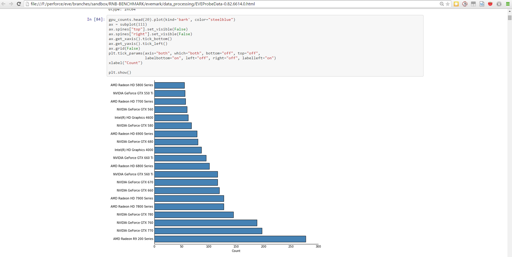

What's this all about?
How we made a crowd-testing app that is also used for development
Who is your presenter?
Björgvin Reynisson
QA Engineer at CCP Games
Background in mobile phones
What is EVE Probe?
An app for:
- Crowd-testing the EVE Online Graphics Engine
- Development
- Performance Benchmarks/Monitoring
Has anyone experienced this?
"We cannot reproduce this..."
Why is reproduction hard?
EVE Players use a LOT of different configurations
- Windows
- Mac
- Linux (although we don't support it)
- 855 different Graphics cards (GPU's)
EVE Probe
Works on your machine!
EVE Probe
Repeatable test-scenes that you play back on your computer
Crowd-testing!
Increased coverage
Demo:
What metrics are collected?
- System Info
- Settings
- EVE Probe version
- Logs
- Performance Metrics
- Crash info
Data Pipeline
Data Pipeline
Initially used R and IPython notebooks for cleaning/processing/visualizing data
IPython Notebook Example

EveProbe Dashboard

EVEProbe Dashboard
- Python Flask application
- Javascript visualization
- Map/Reduce queries Mongodb
Example:

Performance Metrics
Builds from each branch

Getting the app to the players
Delivery
Resources are delivered On-Demand.
Binaries are delivered On-Demand.
Download-on-Demand
Now implemented for EVE Online
One of the biggest changes in the delivery of the game
Currently investigating binary delivery for EVE Online
Developer Tool
- A test-framework
- Repeatable scenes
Adoption
Success?
- Great development tool
- Has proven its worth for hard-to-reproduce defects
- Big potential for benchmarking use
Improvements?
- Low uptake
- Soft launch with minimal push
- Integrate into release process